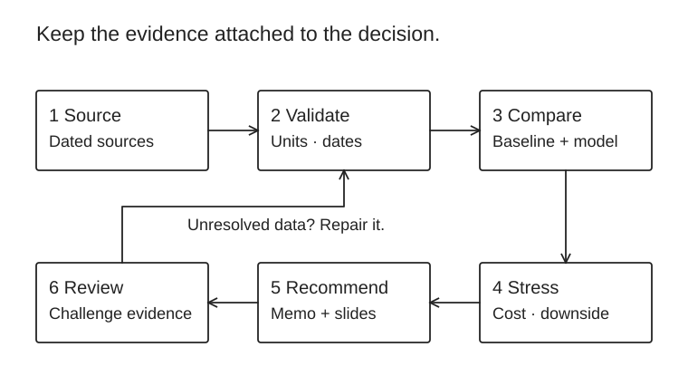
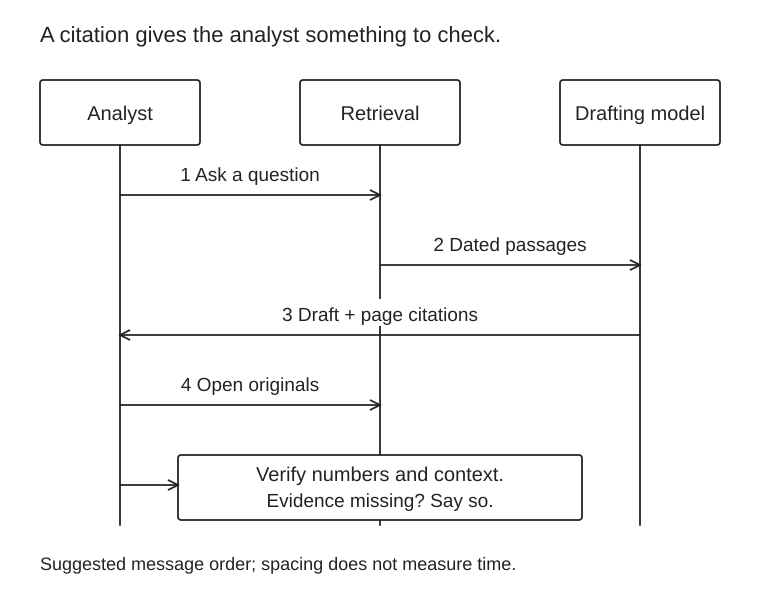

You already know ML. Spend your time learning financial meaning, messy data, validation and recommendations. Every project ends in a one-page memo and five slides.

Suggested workflow for all three cases. Trace the memo back to dated sources; unresolved data sends the work back to validation. The comparison and review tasks below give each step a concrete output. Scroll the illustration horizontally on a narrow screen.
Case 1 · Should this business invest?
4–6 weeks · strategic finance
Choose a listed company. Build linked income statement, balance sheet and cash-flow forecasts; compare an expansion case with a conservative case. Add DCF sensitivity to margins and discount rate. Produce a recommendation with capital required, downside and the assumptions that would reverse your decision.
Illustrative values: 100 + 20 − 50 = 70 operating cash; 70 − 60 = 10 free cash. The floating bars show the adjustments. Scroll the illustration horizontally on a narrow screen.
Case 2 · Which lending policy should we choose?
6–8 weeks · risk + ML
Compare logistic regression with a boosted model on credit data. Use time-based splits where dates exist; otherwise state the limitation. Explain calibration, missingness, stability and fairness. Translate the threshold into expected loss, approvals and profit under explicit LGD and pricing assumptions.
Use the UCI credit-default dataset for a learning prototype, not a production policy. End with “approve model / revise policy / collect more data,” and a monitoring plan. Label synthetic financial assumptions clearly.
Case 3 · A research assistant an analyst can audit
4–6 weeks · LLM + investment research
Retrieve annual-report passages, extract KPIs and compare changes across years. Cite page and document date for every claim. Test numerical accuracy, unsupported answers, prompt injection and “not enough evidence” behavior. Benchmark against manual analysis and a simple retrieval baseline.
Read FinGPT as a research starting point. Make a cost / reliability recommendation and demonstrate a five-minute analyst workflow. Keep private data out of public demos.

Suggested workflow for case 3. Returning a cited draft is only an intermediate step: the analyst checks the originals. Unsupported claims need a clear “not enough evidence” result. Scroll the illustration horizontally on a narrow screen.Optional quant lane · keep your research edge
Reproduce one result from Gu, Kelly & Xiu: Empirical Asset Pricing via ML. Test a simple factor baseline before a neural model. Report turnover, transaction costs, drawdown and out-of-sample performance. Read Bailey et al. on backtest overfitting first. Document timestamp alignment, delisted assets and every model search. A good failure analysis is stronger than an implausible Sharpe ratio.
Your data-engineering advantage
Build an ingestion → validated financial tables → feature / forecast → dashboard pipeline. Preserve units, currencies, restatements and point-in-time versions. Add reconciliation, freshness checks and lineage. Tie reliability to a business consequence: fewer wrong forecasts or faster risk review, not just lower latency.
Learn market structure and instruments through Zerodha Varsity; browse RBI and SEBI for Indian context. For your first projects use permitted public data; record its license and sampling limits.